Módulo: Seguridad de los Sistemas (Parte 2) — Aprende como gerente: autenticación, MFA, controles ACL/RBAC, cifrado, firewall/VPN, backups 3-2-1, IDS, políticas PUA y protección de datos personales (DPI/PII).
💡 ¿Cómo usar? Toca todo: cada tarjeta, engranaje y paquete responde. Gana XP, prueba el MFA, el cifrado y el firewall, clasifica datos PII y cierra con el reporte PDF en parejas para Canvas.
Guía gerencial de protección de activos · Ilustración: Estrategia de Seguridad Digital (Gemini Notebook). img/estr_p01.jpg
MISIÓN 1 · El mapa completo del blindaje
El Ecosistema de Seguridad 🔺 toca cada pilar
Todo gerente protege confidencialidad, integridad y disponibilidad con 3 familias de herramientas: autenticación (verificar quién eres), prevención (bloquear) y detección (alertar).
🪪
Autenticación
Verificar identidades.
Ej: contraseña + token + huella
🧱
Prevención
Bloquear accesos e interrupciones.
Ej: firewall, VPN, antivirus, cifrado
📡
Detección
Identificar patrones sospechosos.
Ej: IDS + seguridad física
👆 Toca un pilar para ver qué hace, qué herramienta usa y qué pasa si falta.
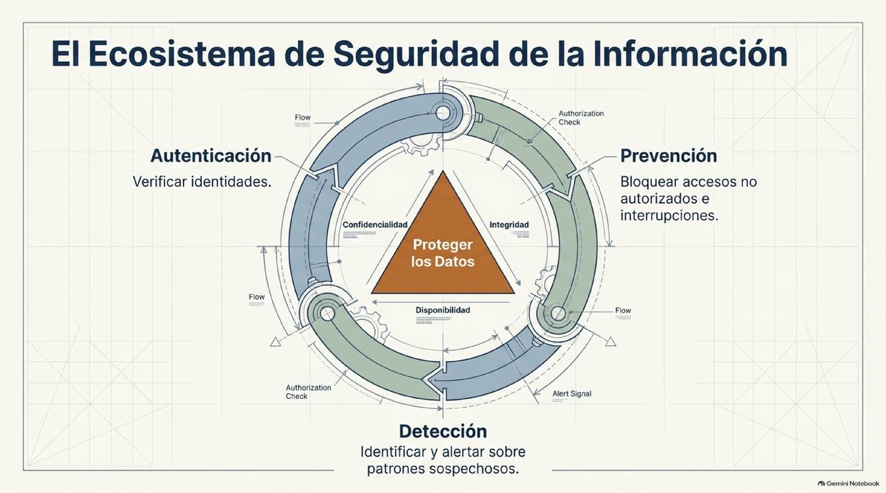
El ecosistema protege los datos al centro · Fuente: Estrategia de Seguridad Digital. img/estr_p02.jpg
MISIÓN 2 · ¿Quién eres realmente?
Los 3 Factores de Autenticación 🪪 prueba tu contraseña
Algo que sabes (contraseña/PIN/OOW) · Algo que posees (tarjeta, llave, token RSA con código dinámico) · Algo que eres (huella, retina, rostro).
🧠Algo que se sabe
Contraseñas, PIN, preguntas OOW.
🔑Algo que se posee
Tarjeta, llave, token dinámico.
👆Algo que se es
Huella, retina, geometría facial.
👆 Toca cada factor para ver su ejemplo chapín y su debilidad.
🔬 Laboratorio: ¿tu contraseña aguanta? escríbela (no uses tu clave real)
Pista: +12 caracteres, mayúscula + número + símbolo, única por sistema.
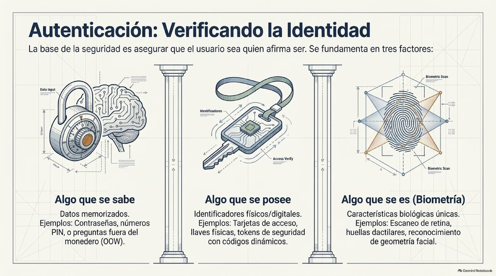
Tres columnas de identidad · Fuente: Estrategia de Seguridad Digital. img/estr_p03.jpg
MISIÓN 3 · El doble engranaje que frena hackers
Autenticación Multifactorial (MFA) ⚙️ mueve los engranajes
Un solo factor se vulnera fácil. MFA exige 2+ factores de distintas categorías: ej. PIN memorizado (sabes) + código del token físico (posees).
⚙️🔒⚙️
Activa o quita el token y prueba: con solo contraseña el atacante entra; con MFA se queda fuera.
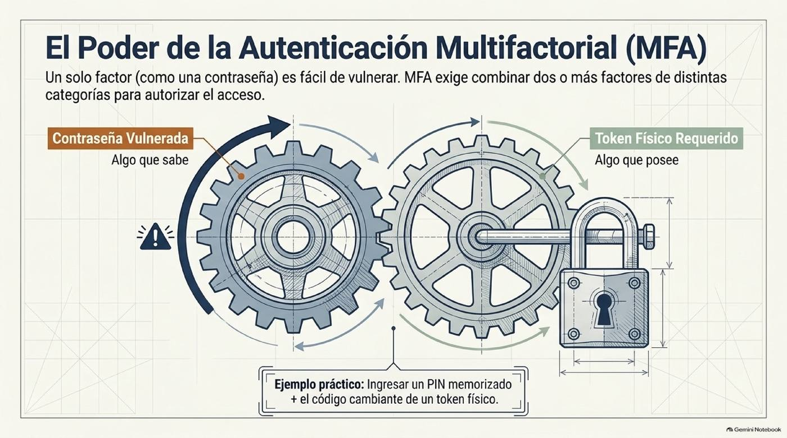
Sin el segundo engranaje no hay apertura · Fuente: Estrategia de Seguridad Digital. img/estr_p04.jpg
MISIÓN 4 · Quién puede qué
Controles de Acceso: ACL vs RBAC 👥 mueve el slider
Autenticado el usuario, el control decide sus privilegios (leer, escribir, agregar, eliminar). ACL asigna permiso por persona y recurso (caos a escala). RBAC asigna permisos a roles (Gerencia, Auditoría) y vincula personas a roles.
Reglas ACL (persona × recurso)
96 reglas
Reglas RBAC (4 roles + asignaciones)
~16 reglas
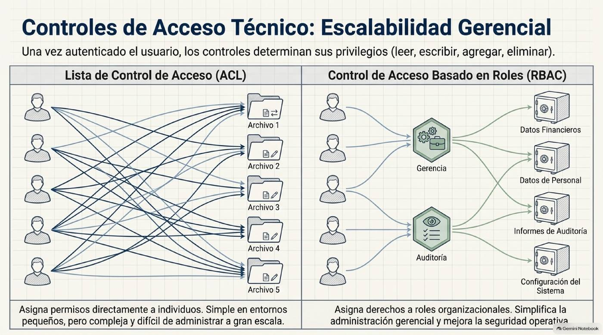
Izq: maraña ACL · Der: orden RBAC por Gerencia/Auditoría · Fuente: Estrategia de Seguridad Digital. img/estr_p05.jpg
MISIÓN 5 · El lenguaje secreto
Cifrado: Simétrico vs Asimétrico 🔐 cifra tu mensaje
El cifrado vuelve los datos incomprensibles sin la clave. Simétrico: una sola clave compartida para cifrar y descifrar. Asimétrico (clave pública): clave pública abierta para cifrar + clave privada exclusiva para descifrar.
🔑 Simétrico (clave única GT-2026):
—
🔓🔒 Asimétrico (cifras con pública, solo abres con privada):
—
💡 Intercambiar la clave simétrica por WhatsApp la expone; la asimétrica resuelve eso para banca y FEL. En la práctica se combinan (híbrido).
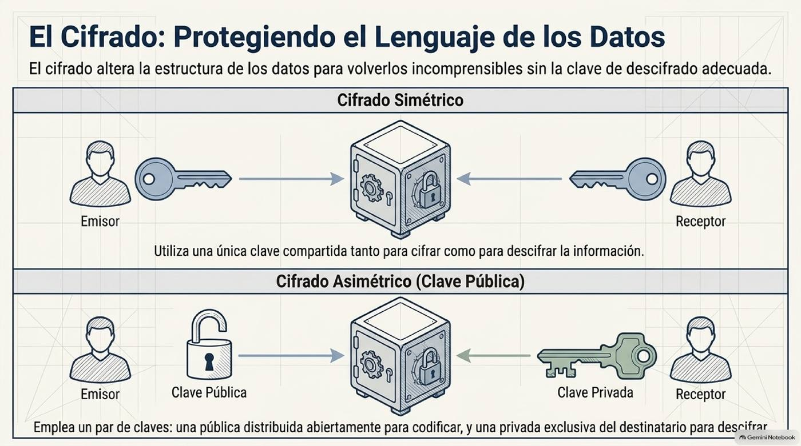
Una clave vs par pública/privada · Fuente: Estrategia de Seguridad Digital. img/estr_p06.jpg
MISIÓN 6 · El muro digital + el túnel
Firewall, Antivirus y VPN 🧱 filtra paquetes y abre el túnel
Firewall: inspecciona tráfico y bloquea lo que viola reglas. VPN: túnel cifrado para que el remoto entre seguro a la intranet. Antivirus: neutraliza software malicioso.
🧱 Mini-firewall: ¿pasa o se bloquea?
Regla de la empresa: solo pasan facturación FEL y correo corporativo. Lo demás (.zip desconocido, streaming, remoto sin VPN) se bloquea. Toca cada paquete:
📄 FEL SAT ✅
🧱
📦 update.zip desconocido ⛔
📧 correo corporativo ✅
🧱
🎬 streaming 4K hora pico ⛔
0/4 inspeccionados.
🔒 Túnel VPN: del café a la intranet
Sin VPN tus datos viajan expuestos en WiFi público. Con VPN viajan cifrados dentro del túnel.
💼
Pulsa enviar y observa si un espía del WiFi puede leer.
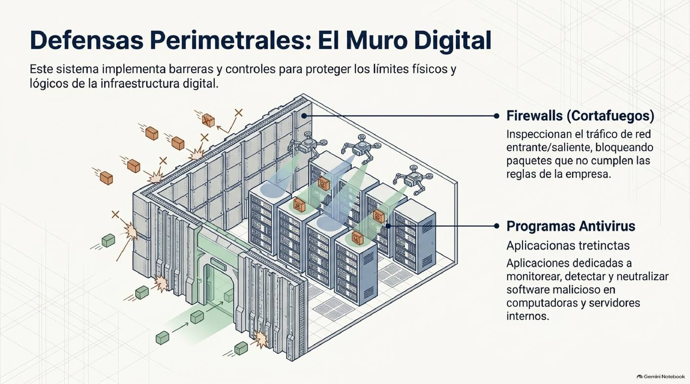
El muro filtra; el antivirus patrulla adentro · Fuente: Estrategia de Seguridad Digital. img/estr_p07.jpg
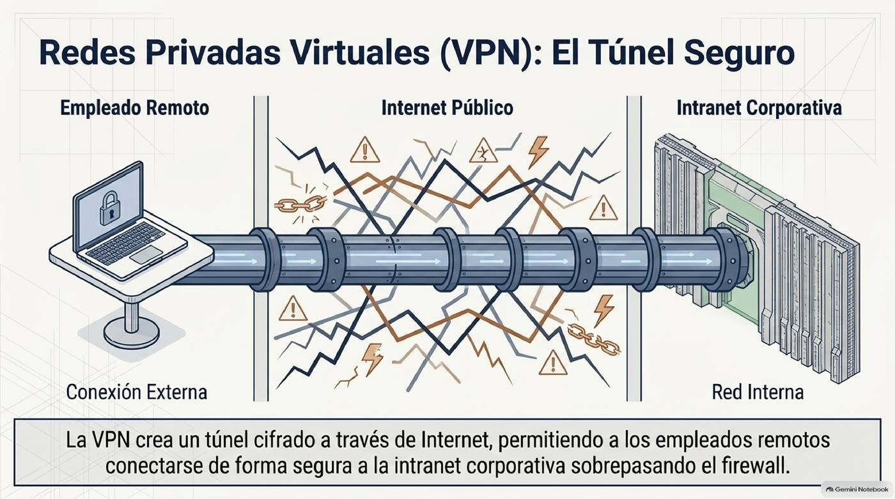
El túnel cruza el internet hostil sin exponerse · Fuente: Estrategia de Seguridad Digital. img/estr_p08.jpg
MISIÓN 7 · Que el negocio nunca pare
Backups y Continuidad 💾 completa el ciclo
Plan de desastres: 1) copias periódicas · 2) copia offsite (fuera del local) · 3) pruebas de restauración · 4) UPS + sitio en caliente + SAN.
0/4 — Sin ciclo completo, un ransomware o un apagón te deja en Q0.
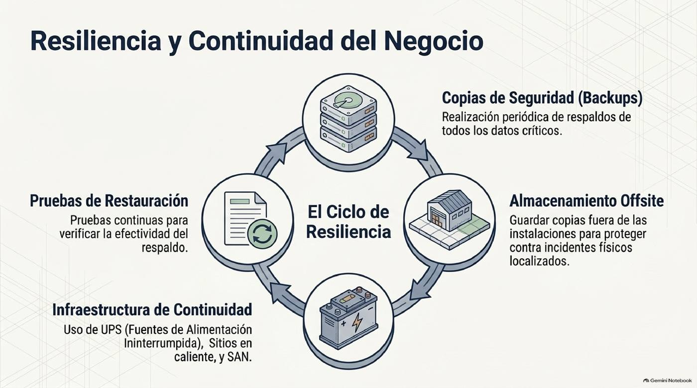
Respaldar → guardar fuera → probar → energía alterna · Fuente: Estrategia de Seguridad Digital. img/estr_p09.jpg
MISIÓN 8 · Ojos que nunca duermen
Detección: IDS + Seguridad Física 📡 activa el radar
IDS: inspecciona tráfico en tiempo real y alerta ante patrones sospechosos. Seguridad física: puertas, sensores, temperatura/humedad y vigilancia del hardware.
IDS apagado: el ataque entra sin que nadie lo vea.
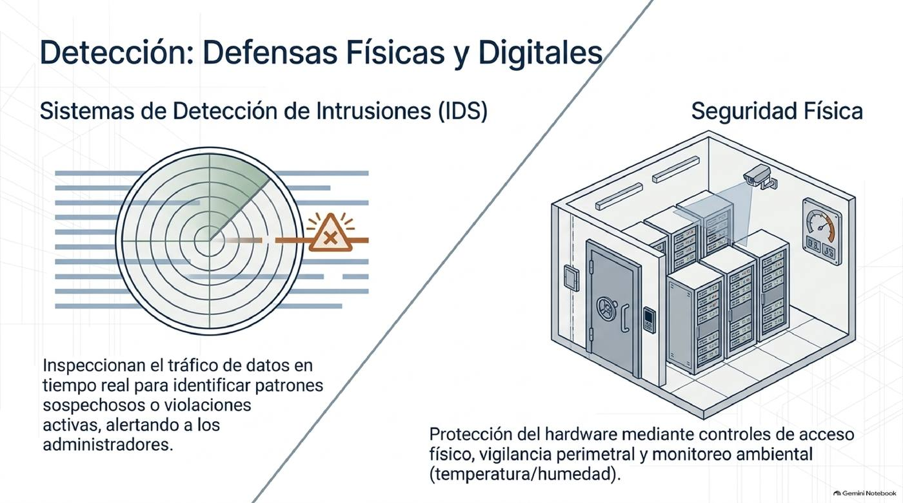
Radar digital + cuarto blindado · Fuente: Estrategia de Seguridad Digital. img/estr_p10.jpg
MISIÓN 9 · El factor humano manda
Políticas y PUA 📜 voltea y equilibra
Sin reglas claras la técnica falla: política de seguridad (directrices + sanciones) y PUA (qué se permite y qué se prohíbe: compartir credenciales, proyectos personales en servidores, masivos no autorizados).
📜Políticatoca para ver
Documento formal
Fija uso correcto de activos y sanciones. Sin firma no hay exigencia.
📵No compartirtoca para ver
Credenciales
Prohibido prestar usuarios/claves y códigos de 6 dígitos.
🖥️No personaltoca para ver
Servidores limpios
Prohibido alojar proyectos personales o minería en equipo corporativo.
📧No spamtoca para ver
Masivos controlados
Prohibido enviar correos masivos no autorizados (reputación + FEL).
⚖️ Balanza gerente: seguridad vs usabilidad mueve el slider
🔐
🔐🏃
🏃
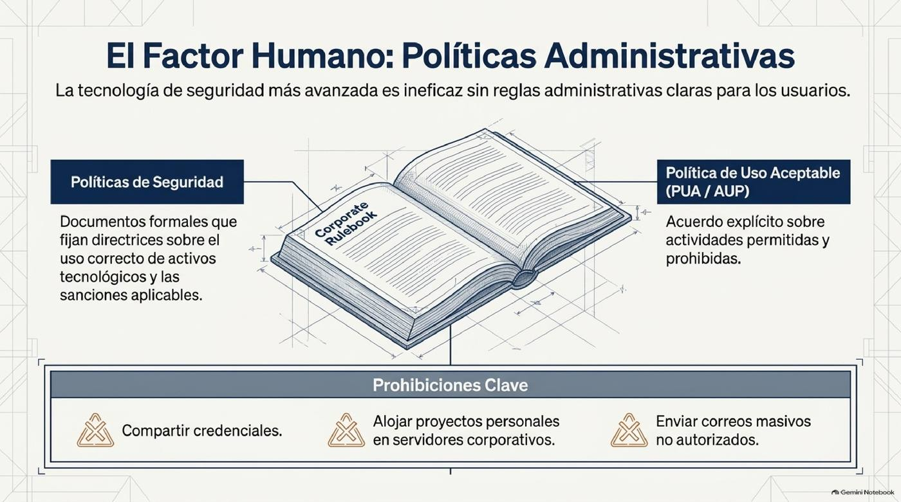
El libro de reglas que la tecnología no puede escribir sola · Fuente: Estrategia de Seguridad Digital. img/estr_p11.jpg
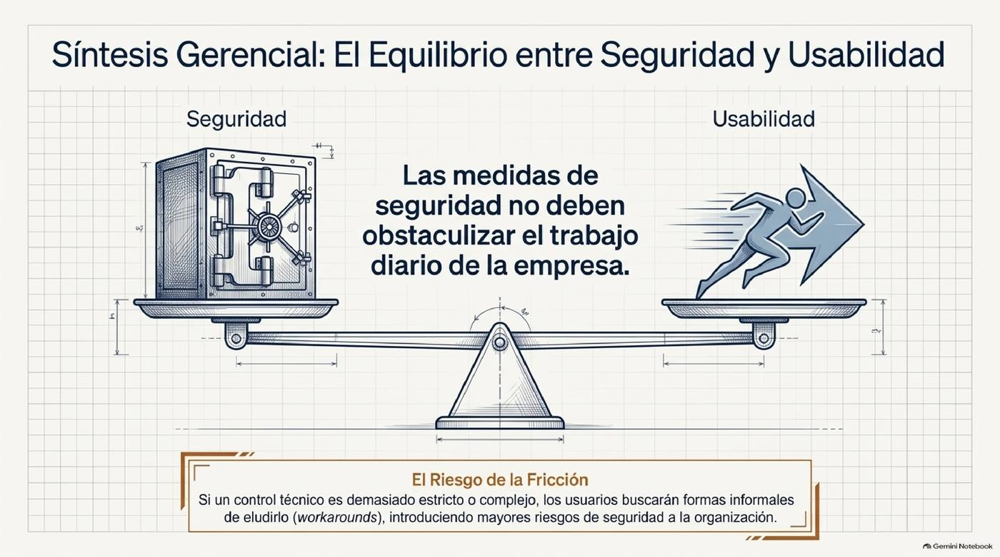
Si el control estorba, el usuario lo elude (workaround) · Fuente: Estrategia de Seguridad Digital. img/estr_p12.jpg
MISIÓN 10 · Lo más valioso: las personas
Privacidad y PII 🪪 ¿es PII o no?
Privacidad: controlar tu propia información. PII: nombres + DPI/CUI, nacimiento y biometría, expedientes médicos/laborales, datos financieros. Protégela con consentimiento, propósito claro, recolección mínima y salvaguardas.
✅ Principios de información justa marca los que cumple tu empresa
TRABAJO EN CLASE · 2.º AÑO ADMÓN UMG · EN PAREJAS (PILOTO + COPILOTO) · ~40 MIN
📝 Ejercicio en Clase: Blindadores de Activos en Pareja
El 🧑✈️ Piloto propone la herramienta y el 🧭 Copiloto la cuestiona con la guía y valida el costo en quetzales. Completen los 4 casos guatemaltecos de herramientas + fase de investigación (5–10 min) y generen el PDF para Canvas.
📋 Instrucciones y tiempo (40 min, léanlas juntos):
3–10 min · Investigación: busquen “backup 3-2-1”, “MFA banca Guatemala” y “agenciavirtual.sat.gob.gt”. Anoten 1 hallazgo por caso en el debate.
10–32 min: resuelvan los 4 casos (herramienta que falló/falta, pilar CIA, pérdida vs prevención Q).
32–40 min: compromiso PUA + reflexión + PDF. Sin 4 casos ✅ no se habilita.
Amenazas actuales que verán: códigos de 6 dígitos robados, ex-empleados con acceso, WiFi público espiado, DPI en Excel sin control, QR falsos y backups que nunca se probaron.
Paso 0 · Datos de la pareja 👥 + Servicio de IA 🤖
Completa cada caso con tu análisis y debate en pareja. En esta página la mentoría IA está desactivada: no se requiere API Key de OpenRouter.
Verifica con “Verificar” (no regala la nota) y genera el PDF.
Paso 0 · Tus datos 🎓
📁 El caso nuevo: Hotel Posada del Viajero, Antigua Guatemala
La recepcionista conectó una USB encontrada en el parqueo para “ver qué tenía” y el sistema de reservas quedó cifrado: piden Q28,000 en 48 horas o borran todo. Hay “backup” en un disco externo… conectado al mismo servidor (también cifrado) y jamás probado. No hay copia offsite ni PUA firmada.
Faltan 3 días para un congreso de 120 huéspedes y el hotel pierde Q4,600 por día sin reservar ni facturar. La planilla de Q60,000 vence en 5 días. El dueño pregunta: ¿pagamos el rescate?
🎯 Ransomware vía USB + sin backup real💰 Rescate Q28,000 / 48 h📉 Q4,600/día parado👥 Planilla Q60,000💾 Sin offsite ni prueba
🧭 Tutoría: cómo resolverlo (léeme antes de escribir)
T.1 · Tu decisión fundamentada
T.2 · El número que convence al dueño
Calcula: (a) pérdida 5 días · (b) prevención anual (Q300/mes + Q900/año + Q550/año) · (c) veces que cabe la prevención en la pérdida.
T.3 · La regla que habría evitado el clic
Paso final · Tu conclusión + PDF 📤
📎 El PDF se descargará como Apellido_Carnet_TareaSem11.pdf → Canvas → “Tarea: Silla del Gerente S11”.
GRADUACIÓN · Demuestra que eres gerente blindado
Quiz Final 🎓 XP: 0
🏆 ¡Felicidades, Gerente Blindado!
Glosario exprés 📖
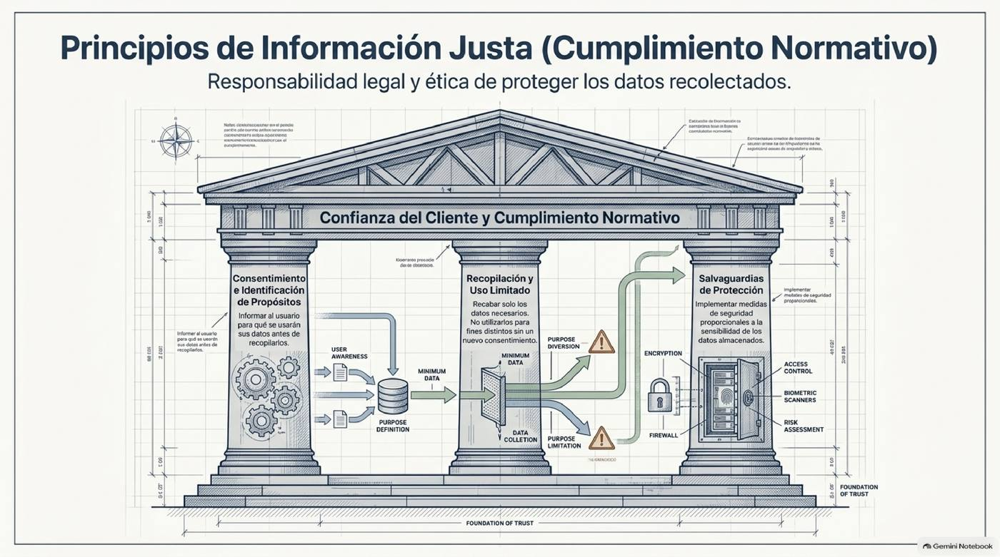
Cierre gerencial: меньше datos, más protección · Fuente: Estrategia de Seguridad Digital (p.14). img/estr_p14.jpg
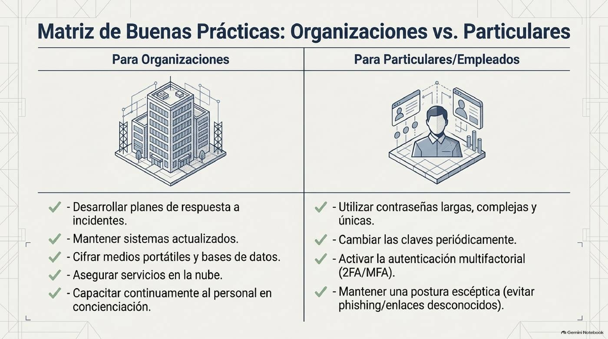
Checklist final para tu empresa · Fuente: Estrategia de Seguridad Digital (p.15). img/estr_p15.jpg
🤖 Servicio de IA (OpenRouter)
La clave se guarda solo en este navegador (bias-lab-settings / openrouter_settings) y sirve para Estadística I e Informática I. Obtén tu key gratis aquí (empieza con sk-or-v1-).
🔒 En laboratorios compartidos usa “Olvidar clave” al salir.
🤖 Mentor IA ·
⏳ Consultando al mentor IA...
Tu análisis registrado:
💬 Punto de vista, retroalimentación y consejo del mentor
✅ Esta retroalimentación quedará guardada y aparecerá en tu PDF final.